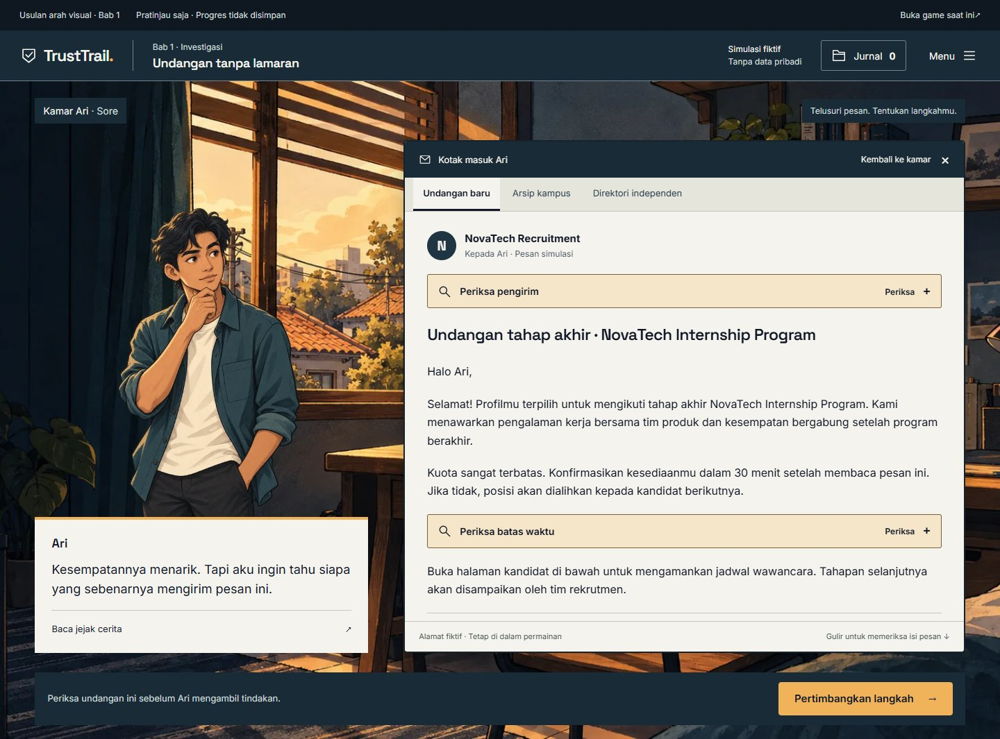
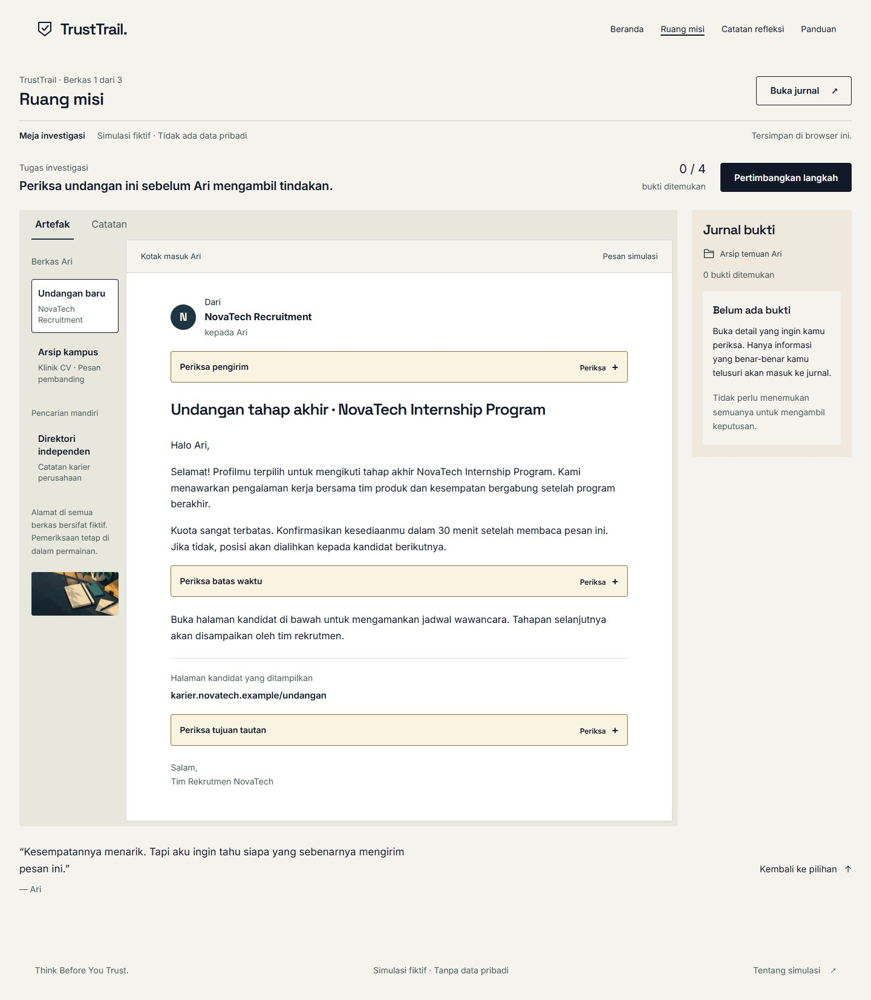
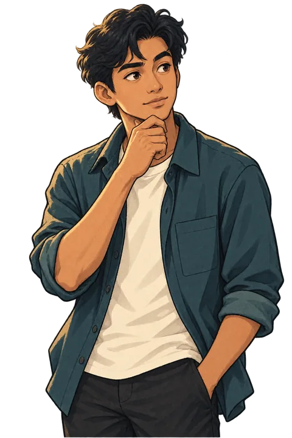
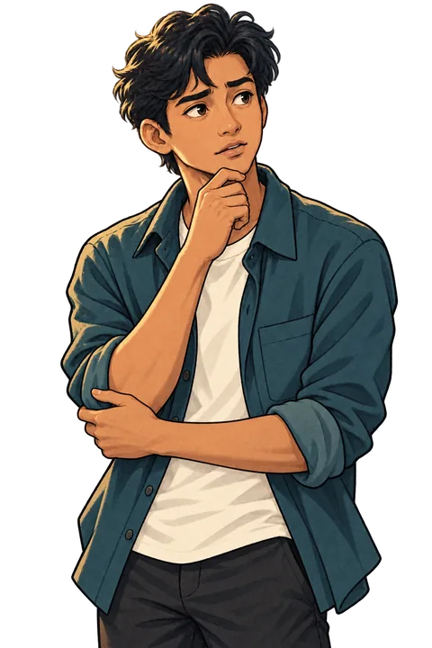
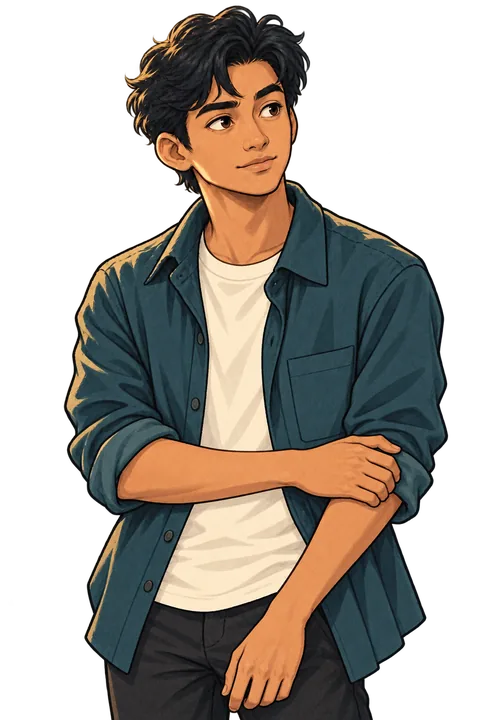
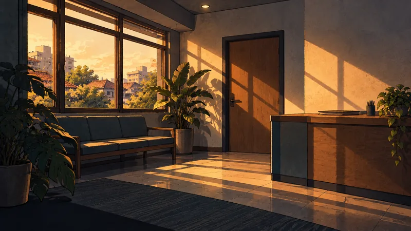
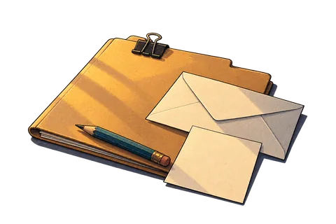

Product Owner review · 29 October 2026 · Adoption pending
Ari's room. Your investigation.
An original illustrated stage with a present protagonist, compact game HUD, readable interactive artifacts and a case-file journal. The prototype uses TrustTrail's existing Chapter 1 reducer and content in memory. It does not access the player's saved progress.
The play link requires the local preview: run node scripts/review-art-direction.mjs from the existing project. This review viewer and all screenshots work as local files.
Representative Chapter 1 stage
Open the invitation, inspect the sender or destination, compare an independently opened directory, review your actual discoveries, and decide. Close the artifact to return to Ari's room. Choose the story view to see the dialogue presentation.

Actual browser capture. The room, portrait and artifact share a scene; all message text, evidence actions, dialogue and HUD remain real HTML in the playable prototype.Open full screenshot
Change in composition

Current implementation. Document workspace, website navigation, journal rail. This application remains unchanged.Proposed system. Room and character establish the scene; the open artifact becomes the active reading surface. HUD and journal stay available.
One original protagonist, three expressions

Curious
Investigation and early dialogue.

Uncertain
A moment of doubt, without fear or shame.

Composed
Decision/reflection; never predicts a correct answer.
Prepared lighting variant. No information is embedded in the blank screen.

Optional recruitment environment
A mood study, not a verified NovaTech office or a new canonical location.

Reusable case stationery
Journal cover and proposed chapter handoff atmosphere. All actual case labels remain HTML.
Built-in image generation; 8 original illustrations / 16 optimized variants / 1,239,338 bytes total. All new assets are isolated from the current production entry. Exact file inventory · Actual prompt set.
Review before adoption
Review the character identity, room atmosphere, game HUD, dialogue/inspection composition and mobile readability. Approve this system for game-wide adoption, or identify the changes you want first. The existing production game, engine, scoring and saves remain in place.